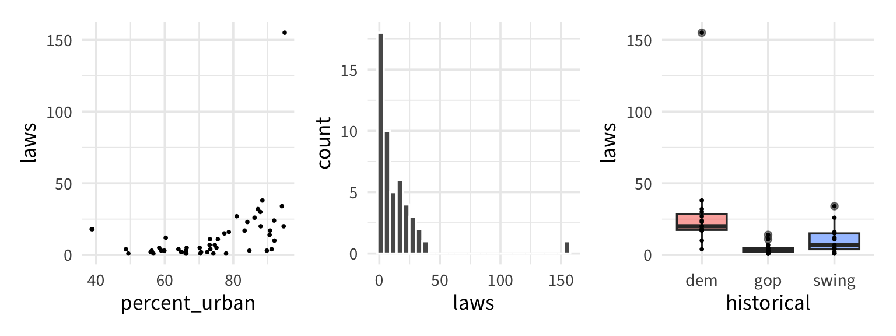
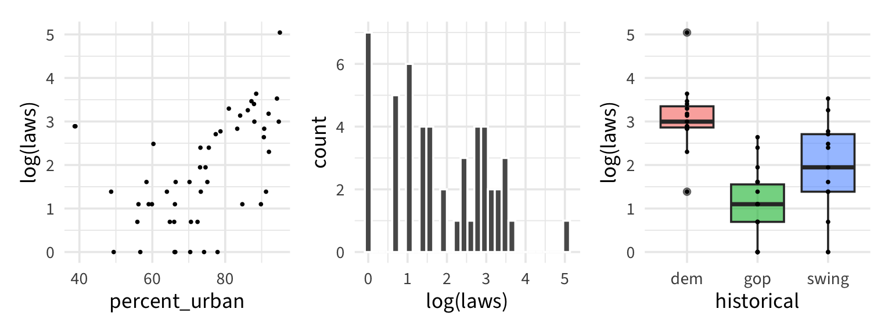
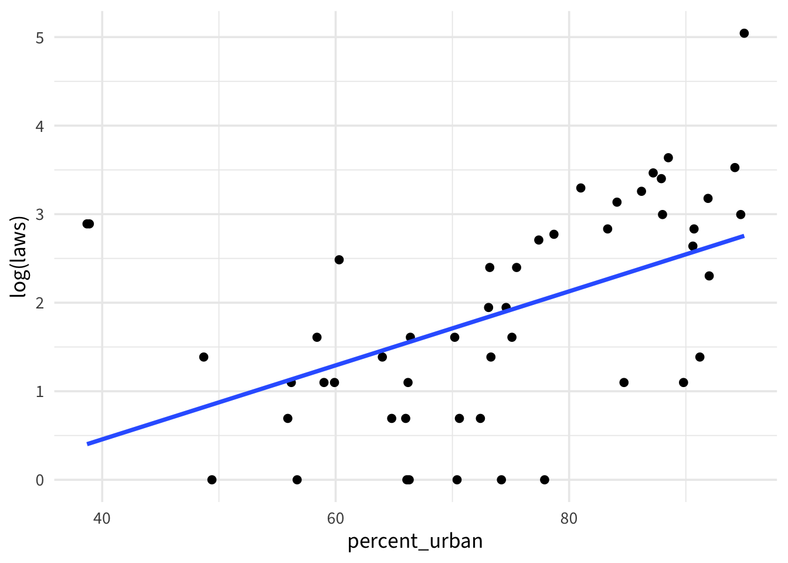
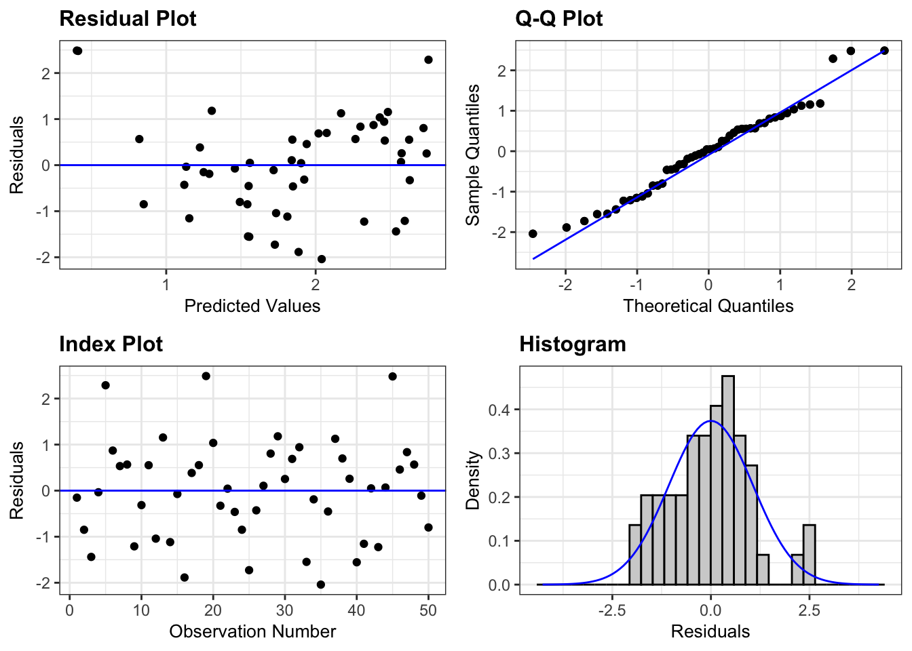
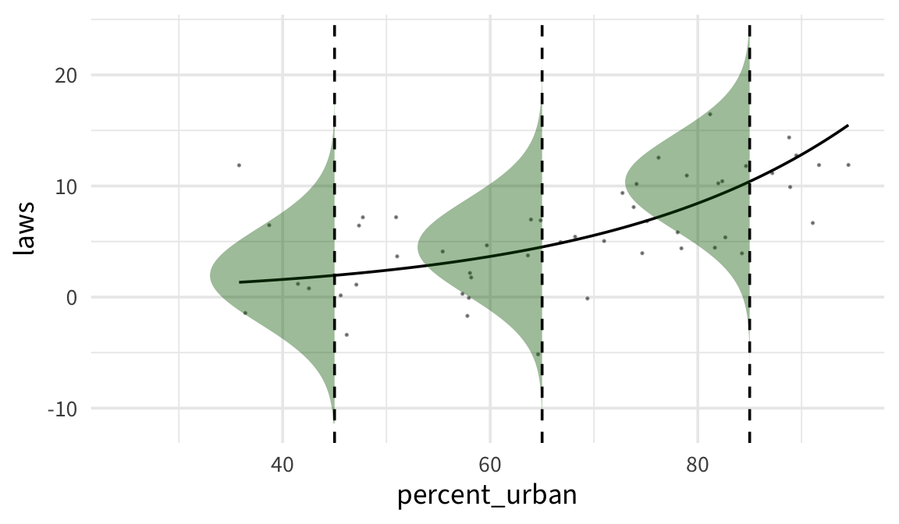
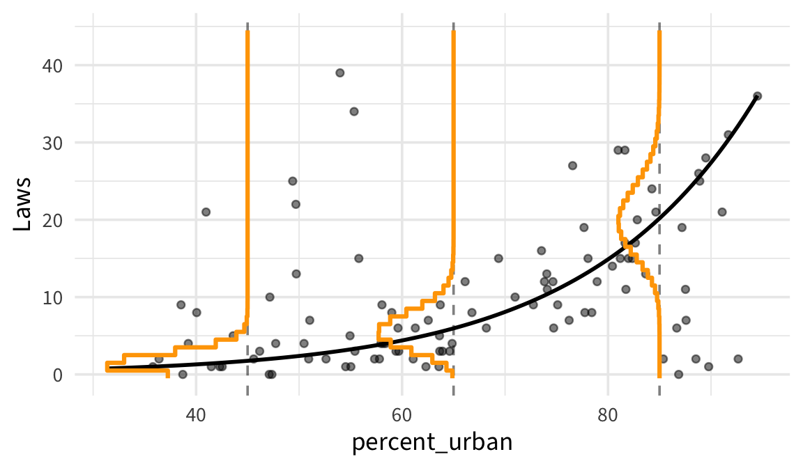
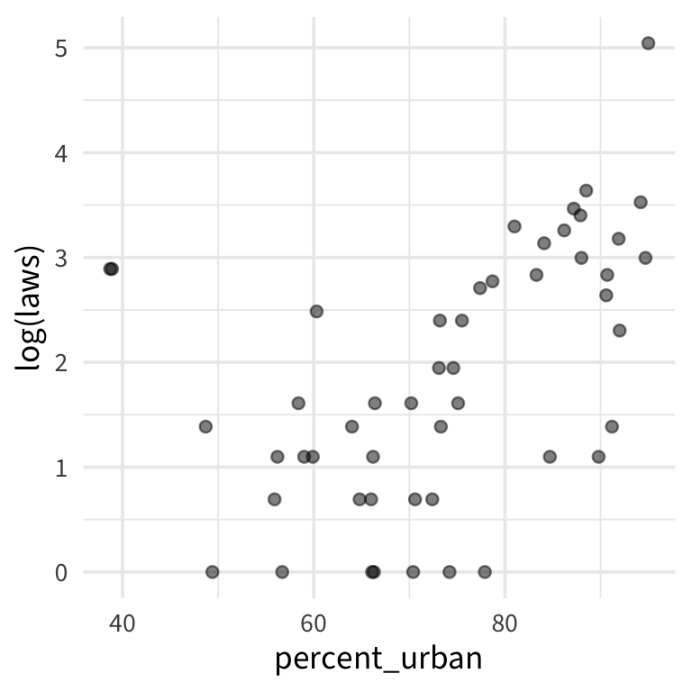

Intro to Poisson Regression
Day 26
Motivating data: number of anti-discrimination laws
The equality_index data includes the observed number of anti-discrimination laws in each state, \(Y\) . We are interested in modeling \(Y\) by a state’s percent_urban and its historical presidential voting patterns. The historical variable has 3 levels:
dem= the state typically votes for the Democratic candidategop= the state typically votes for the Republican (GOP) candidateswing= the state often swings back and forth between Democratic and Republican candidates
EDA
lawsis skewed- as percent urban increases, laws also increases
demandswinggenerally have more laws thangop
EDA (log scale)

log(laws)is still a little skewedlog(laws)andpercent_urbanis more linear- if we had states with 0 laws, might have to do
log(laws + 1)
SLR Model (ignoring historical for now)

# A tibble: 2 × 5
term estimate std.error statistic p.value
<chr> <dbl> <dbl> <dbl> <dbl>
1 (Intercept) -1.22 0.793 -1.53 0.132
2 percent_urban 0.0418 0.0106 3.95 0.000255
. . .
→ some remaining nonlinearity, but is it worth going the transformation route? Why might we prefer a different model entirely?
Assumed SLR model (simulated data)

Model for count data

Generalized linear model
Random component:
What distribution does the response variable follow?
Linear predictor (systematic component):
What function of the predictors should we use?
Link function:
How can we relate the expectation of \(Y\) and our linear predictor?
Random component
What distribution does the response variable follow?
Possible values: We are counting the number of events that occur over a fixed interval, so \(Y =0, 1, 2, \ldots\)
Poisson distribution
\(P(Y = y) = \frac{e^{-\lambda} \lambda^y}{y!}, \quad \text{for} \quad y = 0, 2, 1, \ldots\)
Linear predictor
What function of the predictors should we use?
\(\eta = \beta_0 + \beta_1 X_1 + \cdots + \beta_p X_p\)
\(\eta =\) “eta”
Link function
How can we relate the expectation of \(Y\) and our linear predictor?
. . .
\(E(Y) = \lambda\) between 0 and \(\infty\)
\(\eta = \beta_0 + \beta_1 X_1 + \cdots + \beta_p X_p \longrightarrow\) between \(-\infty\) and \(\infty\)
What function takes numbers between between 0 and \(\infty\) as input and maps them to the real line?
Link function
How can we relate the expectation of \(Y\) and our linear predictor?
\(\log(\lambda) = \beta_0 + \beta_1 X_1 + \cdots + \beta_p X_p = \eta\)
Poisson regression model for counts
Random component: \(Y_i = \#\) anti-discrimination laws in a state; Poisson distribution is reasonable
. . .
Link function: \(E(Y) = \lambda\) and \(\lambda >0\)
\(\Longrightarrow \log(\lambda) = \beta_0 + \beta_1 X_1 + \cdots + \beta_p X_p = \eta\)
. . .
Inverse-link function: \(E(Y) = e^{\beta_0 + \beta_1 X_1 + \cdots + \beta_p X_p}\)
EDA

What structure are we looking for in this plot?
There are no 0 counts in this data set, how could we create this plot if we had observed 0s?
Model fitting
glm(laws ~ percent_urban, data = equality_index,
family = poisson) Estimate Std. Error z value Pr(>|z|)
(Intercept) -2.18343918 0.30155147 -7.240685 4.464246e-13
percent_urban 0.06057098 0.00358636 16.889266 5.397062e-64Fitted model: \(\log(\widehat{\lambda}) = -2.18 + 0.06 \cdot \tt{percent urban}\)
. . .
How can we interpret the coefficients?
Interpreting the coefficients
\(\log(\widehat{\lambda}) = \widehat{\beta}_0 + \widehat{\beta}_1 x\)
How does the expected (average) number of events, \(\widehat{\lambda}\), change for a 1-unit increase in \(x\)?
. . .
Let’s consider \(x=0\) and \(x=1\):
\(\widehat{\lambda} = e^{\widehat{\beta}_0 + \widehat{\beta}_1(0)}=e^{\widehat{\beta}_0}\)
\(\widehat{\lambda} = e^{\widehat{\beta}_0 + \widehat{\beta}_1(1)}=e^{\widehat{\beta}_0} e^{\widehat{\beta}_1}\)
. . .
The expectation at \(x+1\) is \(e^{\widehat{\beta}_1}\) times the expectation at \(x\)
Interpreting the coefficients
In our example: \(\log(\widehat{\lambda}) = -2.18 + 0.06 \cdot \tt{percent urban}\)
. . .
\(e^{0.06} \approx 1.06\)
. . .
→ A 1 percent increase in the percent of urban residents is associated with an increase in the average number of antidiscrimination laws by a factor of 1.06 (i.e., a 6% increase).
Multiple predictors
full <- glm(laws ~ percent_urban + historical,
data = equality_index,
family = poisson)
summary(full)
Call:
glm(formula = laws ~ percent_urban + historical, family = poisson,
data = equality_index)
Coefficients:
Estimate Std. Error z value Pr(>|z|)
(Intercept) 0.759017 0.326858 2.322 0.0202 *
percent_urban 0.031358 0.003723 8.423 < 2e-16 ***
historicalgop -1.612143 0.133244 -12.099 < 2e-16 ***
historicalswing -0.828788 0.101472 -8.168 3.14e-16 ***
---
Signif. codes: 0 '***' 0.001 '**' 0.01 '*' 0.05 '.' 0.1 ' ' 1
(Dispersion parameter for poisson family taken to be 1)
Null deviance: 962.66 on 49 degrees of freedom
Residual deviance: 413.49 on 46 degrees of freedom
AIC: 608.83
Number of Fisher Scoring iterations: 5→ A 1 percent increase in the percent of urban residents is associated with an increase in the average number of antidiscrimination laws by a factor of \(e^{.03} = 1.03\), holding historical constant (i.e., a 3% increase).
. . .
→ Compared to dem states, gop states have fewer antidiscrimination laws by a factor of \(e^{-1.6} = .202\), assuming percent_urban is held constant (i.e., a 80% decrease).
. . .
→ Compared to dem states, swing states have fewer antidiscrimination laws by a factor of \(e^{-.83} = .44\), assuming percent_urban is held constant (i.e., a 56% decrease).
Today:
- EDA
- Interpretations
- Wald-based tests and CI’s
Next time:
- Conditions for inference
- LRT
- quasipoisson